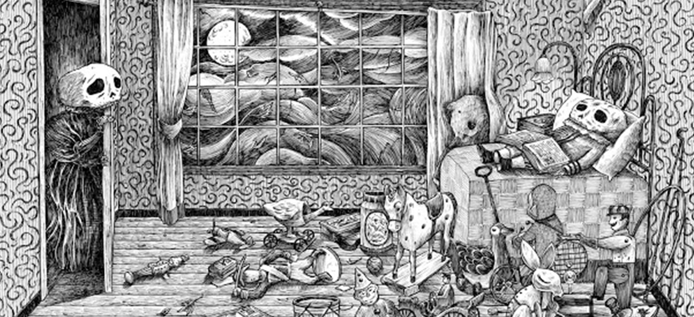
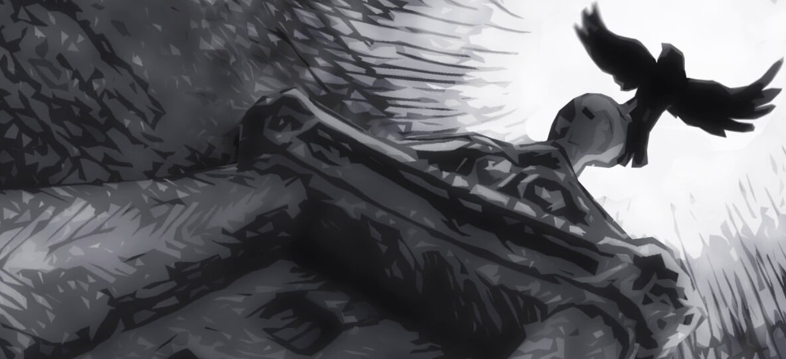
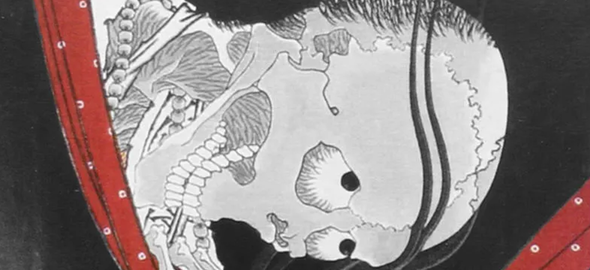
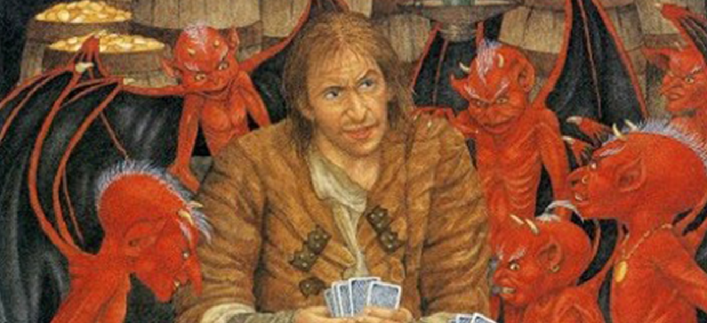
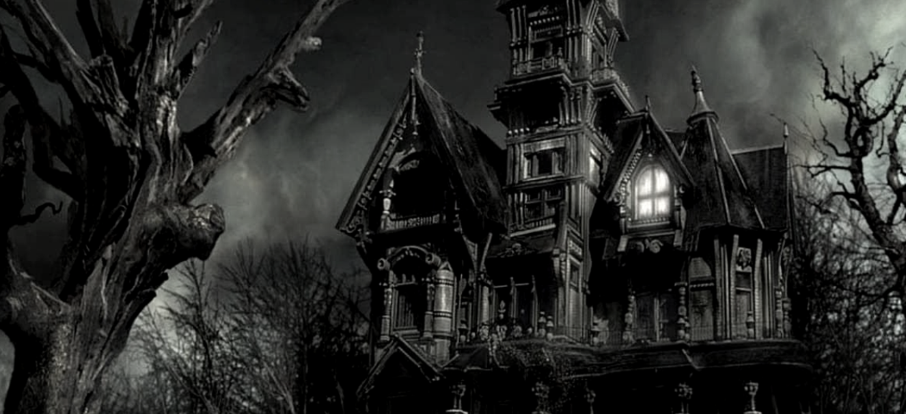

Recomendación en Netflix: Hereditary, de Ari Aster
La Ventana Cerrada
En este cuento de Ambrose Bierce, cuyo título original es "The Boarded Window",
Ambrose nos
lleva a
conocer la historia de Murlock, un viejo asentado en la antigua Cincinnati de 1830.
Recuerda, "los muertos no sangran".

La Partida
En este cuento, Alberto Chimal nos narra la historia de una madre que intenta
recuperar a su
hijo luego de su muerte en un terremoto. Los dioses la escuchan y devuelven el alma del
niño.
Pero...

El Cuervo
Posiblemente, esta sea la obra más reconocida de Edgar Allan Poe, y no es para
menos. En este
breve y poético relato, vemos como un cuervo visita a un hombre que sufre por la
ausencia de
Leonora.

La Promesa
Lafcadio Hearn, también conocido como Koizumi Yakumo, nos lleva por un cuento
sobre la venganza y los celos de una esposa muerta contra la nueva mujer de su esposo,
un noble samurai del castillo.

El Soldado y La Muerte
En este clásico de la literatura del terror, Aleksandr Afanásiev nos deja ver que
con suficiente ingenio (y valentía) hasta la muerte puede ser domada, mientras nos
recuerda lo importante que es poder morir.

La Casa Del Juez
Bram Stoker, famoso por ser el escritor de Drácula, trae también este clásico del
terror en el cual, una pintura cobra vida y continúa con la racha de asesinatos del
juez, con ayuda de sus ratas grandes y gordas.